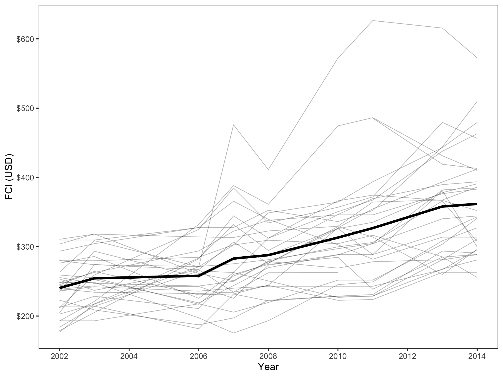

Unconditional Longitiduinal Mixed-Effects Models
Fan Cost Index of Attending NHL Games
Investigating the Relationship
The Fan Cost Index (FCI) is an index used to determine the cost of attendance to a sporting event for a family of four. It is calculated by summing the prices of four average-price tickets, two small draft beers, four small soft drinks, four regular-size hot dogs, parking for one car, two game programs, and two least-expensive, adult-size adjustable caps, for a season.
This project assessed the longitudinal variation in cost of attending an NHL game from 2002-2014 by using FCI to denote cost (no data from 2012 due to lockout). Here is a figure displaying trend lines for the relationship between FCI and year for each NHL team and an average growth trend line is displayed in bold.
The average growth trendline is positive and appears to be linear, although there may be evidence that suggests a quadratic relationship between FCI and year.
Creating and Comparing Models
Three models will be considered in this analysis: a) an uncondiational random intercepts model; b) an unconditional linear growth model; and c) an unconditional quadratic growth model. Here is a table of the unstandardized coefficients and standard errors for these models.
Table 1. Unstandardized Coefficients and Confidence Intervals for a Series of LMER Models Fitted to Estimate FCI of NHL Games
=====================================================================================
Model A Model B Model C
Team 10.138 5.205
(8.867, 11.408) (0.847, 9.564)
Year 0.413
(0.064, 0.763)
Year(Squared) 299.881 236.580 244.821
(281.121, 318.642) (216.925, 256.235) (224.052, 265.590)
-------------------------------------------------------------------------------------
Level-2 Variance (Intercept) 2428.05 2398.24 2385.28
Level-1 Variance 3478.38 1727.95 1691.46
AICc 3034.34 2866.48 2863.25
=====================================================================================
Model C has the most empirical support for representing the data (AICc = 2385.28). Below is the written equation for this model.
\[ \begin{split} \hat{\mathrm{FCI}_{i}} &= 244.82+ 5.21(\mathrm{Year-2002}_{ij}) + 0.41(\mathrm{Year-2002}_{ij})^2 +\mathrm{b_{0j}} \end{split} \]
Interpretting Model 3
The variation between teams (58.50%) accounts for more variation than the variation within a team (41.50%). In practical terms, this means that a team’s FCI in 2002 (the y-intercept) has a larger impact on the FCI of a given year than the rate of change in FCI of a team (the slope).
The predicted average FCI for all teams at the initial measurement occasion (in 2002) is 244.82. Each subsequent year is associated with an increase in FCI by at least 5.61 points. The effect of year on FCI increases over time.
Additionally, here is a figure that presents our model as well as a trend line that represents the FCI for the Minnesota Wild NHL team.